Filtered dropdown lists set up
Multi table databases imply the availability of relations between the tables. Relational databases can be quite complex and usually contain hundreds and thousands of records. It would be very convenient to have the ability to filter the selected data on the form when you fill in the card to save time for adding new entries. Here is the use case: you’ve got a little book store and need to quickly create new orders. So, when creating a new order it would be good to select genre (drama, romance, satire, tragedy, comedy, tragicomedy, realistic fiction, non-fiction, etc.) and then see only those authors that are in the category and then select the necessary book of the author from the list.
MobiDB Database Designer can do it. This step-by-step tutorial will show you how to do it.
Bearing in mind the task described above, our database should contain the following tables: Genres, Authors, Books, and Orders. The database scheme with relations is in the picture below:
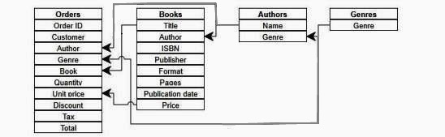
1.Let’s start creating the database from the Genres table. This is how it looks in the designer.
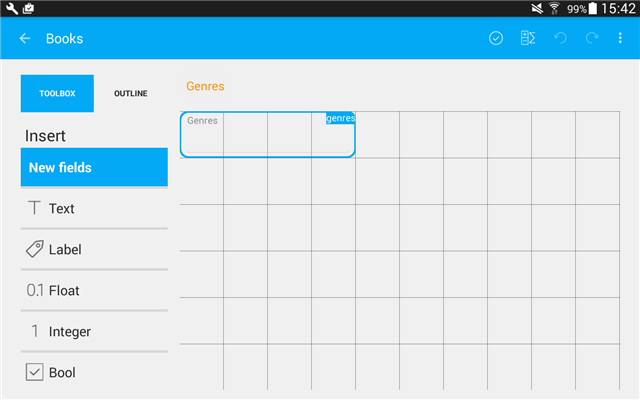
Here is the table view:
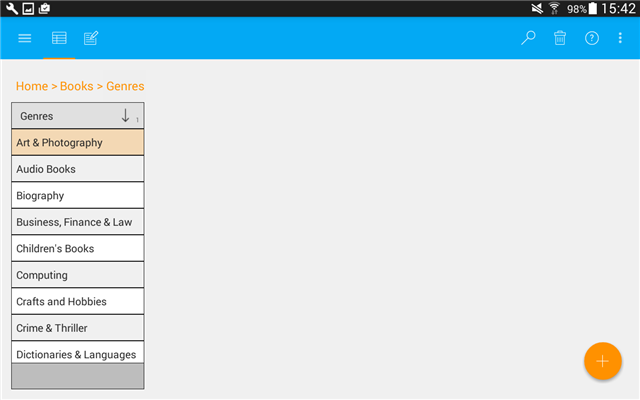
2.Now we need to add the Authors table. It will contain author name and genre the author relates to. Genre will be a Table reference control and we will be able to select it from the dropdown list. More information on creating table relations can be found here.
Designer view: Author is a String field type, Genre is the Table Reference field type.
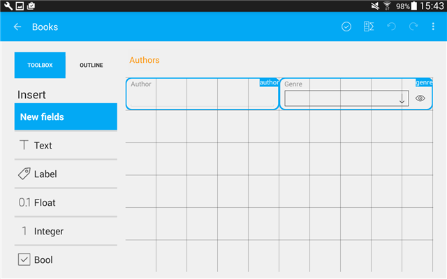
Card view: Genre can be selected from the dropdown list.
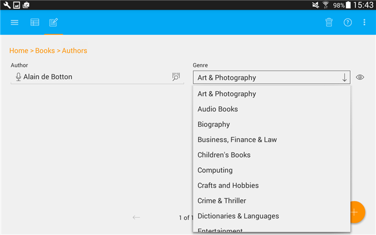
Table view: provides an overview of all authors and genres. Here you can soft and filter, search for authors and genres.
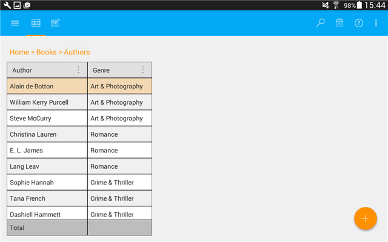
3.Let’s add the Books table. It will contain fields necessary to describe the book including book title, publisher, format, pages, publication date, ISBN, price and author. Author is the Table reference field and we will be able to select the author from the dropdown list.
Designer view: Author is the Table reference control.
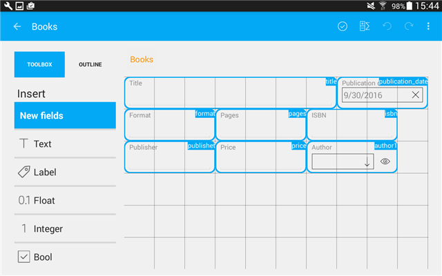
Card view: Selecting author from the dropdown list.
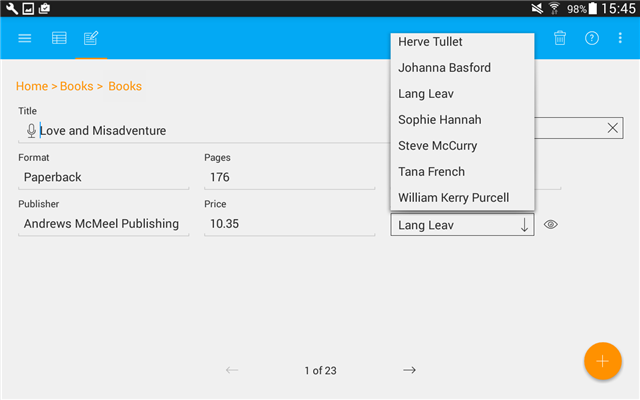
Table view: list of all available books.

4.And finally we will add the Orders table that will contain the fields specifying the order including order ID, customer, genre (selected from the dropdown list), author (selected from the dropdown list, will be filtered depending on the selected genre), book (selected from the dropdown list, will be filtered depending on the selected author), quantity, unit price, discount, tax, total.
Tips:
Adding Genre field: Genre field is a Table reference control. It has the following settings:
Adding Author field: Author field is a Table reference control. It has the following settings:
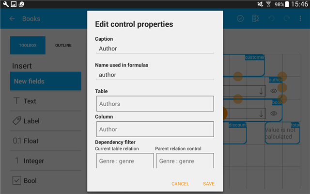
Please pay attention to the following properties of the Dependency filter:
- Current table relation. It sets the relation of fields in the current table. As we want to select the author depending on the selected genre, we need to set the relation to the Genre field.
- Parent relation control. Determines the relation from the parent table (in this case this is the Authors table) that is used to filter data. So, we use Author – Genre relation from the Authors table to filter the data.
Adding Book field: Book field is a Table Reference control. It has the following settings:
Please pay attention to the following properties of the Dependency filter:
- Current table relation. It sets the relation of fields in the current table. As we want to select the book depending on the selected author, we need to set the relation to the Author field.
- Parent relation control. Determines the relation from the parent table (in this case this is the Books table) that is used to filter data. So, we use Book – Author relation from the Books table to filter the data.
Adding Price field: It would be very convenient to show book price automatically (get it from the Book table). It can be done with just one move. Scroll the toolbox down to the Related fields section, select the Price (Book) field and drag and drop it on to the form. The corresponding calculable field with the pre-set expression and caption will be added. You can adjust the other options, if necessary.
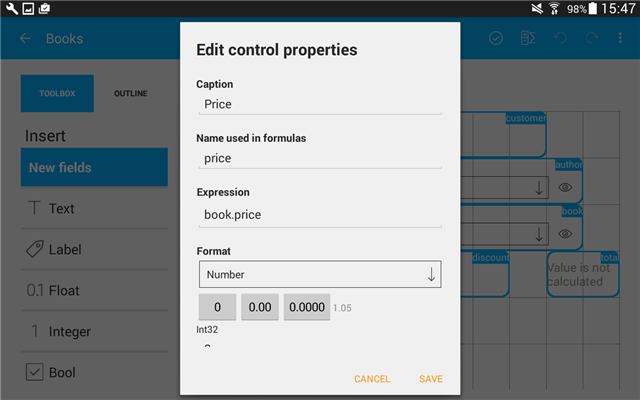
Adding Total field: Total field is a Calculable control. Here you will add an expression to calculate total cost of the order: price*quantity.
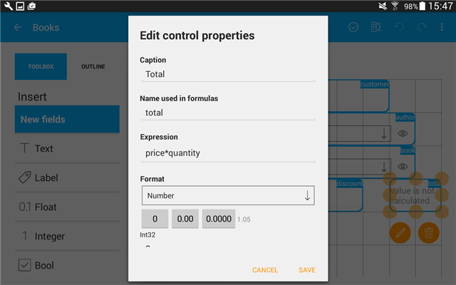
Here is how the form looks in the designer:
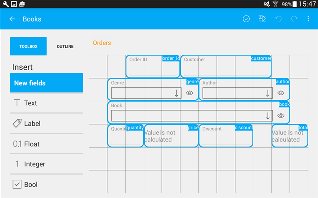
5.Click the checkmark to save changes and close the designer.
So, let’s create a new order. Select the Genre from the list:
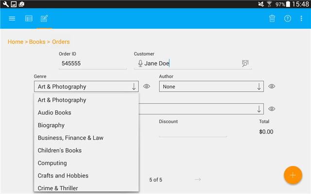
Select the Author from the list of all authors who write about Art & Photography. Note that only 3 authors are available.
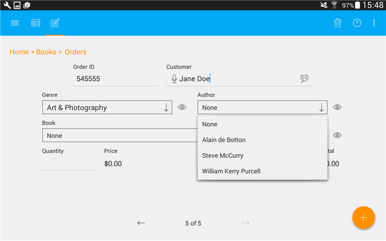
Select the Book of the author you chose on the previous step. You will see only books of the selected author in the dropdown list.
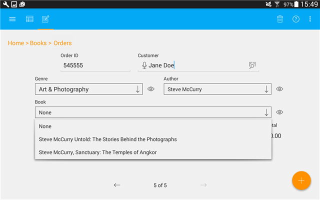
Price of the selected book will be added automatically.

Total order cost will be calculated once you set quantity.
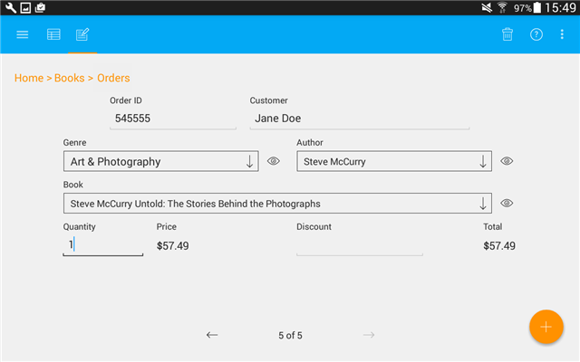
This is how you can quickly setup filtered dropdown lists to make it easy to add new entries.